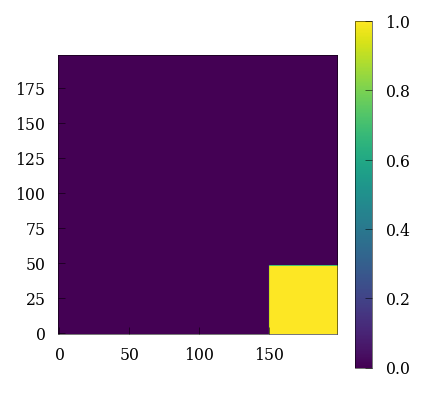
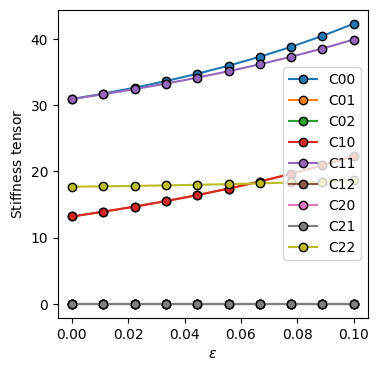

Gent
import jax
jax.config.update("jax_enable_x64", True) # use double-precision
jax.config.update("jax_platforms", "cpu")
jax.config.update("jax_persistent_cache_min_compile_time_secs", 0)
import jax.numpy as jnp
import numpy as np
from jax import Array
import equinox as eqx
import matplotlib.pyplot as plt
from skimage.morphology import disk, rectangle
import itertools
import matplotlib.pyplot as plt
import sys
from projection_operators import compute_Ghat_4_2
import tensor_operators as tensor
sys.path.append("../plot_helpers/")
plt.style.use(["../plot_helpers/prl_paper.mplstyle"])
from plot_helper_for_paper import plot_contourf, plot_imshow, set_size
constructing a dual phase RVE¤
H, L = (199, 199)
Hmid = int(H / 2)
Lmid = int(L / 2)
r = 49
structure = np.zeros((H, L))
structure[:r, -r:] += rectangle(r, r)
plt.figure(figsize=(3, 3))
cb = plt.imshow(structure, origin="lower")
plt.colorbar(cb)
<matplotlib.colorbar.Colorbar at 0x14bc89d65210>

ndim = len(structure.shape)
N = structure.shape[0]
# grid dimensions
shape = [N, N] # number of voxels in all directions
We also define certain Identity tensor for each grid point.
- \(\mathbf{I}\) = 2 order Identity tensor with shape
(2, 2, N, N) - \(\mathbb{I4}\) = 4 order Identity tensor with shape
(2, 2, 2, 2, N, N)
# identity tensor (single tensor)
i = jnp.eye(ndim)
# identity tensors (grid)
I = jnp.einsum("ij,xy", i, jnp.ones([N, N])) # 2nd order Identity tensor
I4 = jnp.einsum(
"ijkl,xy->ijklxy", jnp.einsum("il,jk", i, i), jnp.ones([N, N])
) # 4th order Identity tensor
I4rt = jnp.einsum("ijkl,xy->ijklxy", jnp.einsum("ik,jl", i, i), jnp.ones([N, N]))
I4s = (I4 + I4rt) / 2.0
II = tensor.dyad22(I, I)
assigning material parameters¤
We assign material parameters to the two phases. The two phases within the RVE are denoted as - Soft = 0 - Hard = 1
# material parameters + function to convert to grid of scalars
@functools.partial(jax.jit, static_argnames=["soft", "hard"])
def param(X, soft, hard):
return soft * jnp.ones_like(X) * (X) + hard * jnp.ones_like(X) * (1 - X)
# material parameters
shear_modulus = {"hard": 50, "soft": 16} # N/mm2
jm_modulus = {"hard": 0.2, "soft": 0.4}
# material parameters
μ0 = param(
structure, soft=shear_modulus["soft"], hard=shear_modulus["hard"]
) # shear modulus
Jm = param(
structure, soft=jm_modulus["soft"], hard=jm_modulus["hard"]
) # shear modulus
plt.imshow(Jm, origin="lower")
plt.colorbar()
<matplotlib.colorbar.Colorbar at 0x14bc89cb4b50>

Ghat4_2 = compute_Ghat_4_2(NN=(N,) * ndim, operator="fourier", length=1.0)
# (inverse) Fourier transform (for each tensor component in each direction)
@jax.jit
def fft(x):
return jnp.fft.fftshift(jnp.fft.fftn(jnp.fft.ifftshift(x), [N, N]))
@jax.jit
def ifft(x):
return jnp.fft.fftshift(jnp.fft.ifftn(jnp.fft.ifftshift(x), [N, N]))
# functions for the projection 'G', and the product 'G : K : dF'
@jax.jit
def G(A2):
return jnp.real(ifft(tensor.ddot42(Ghat4_2, fft(A2)))).reshape(-1)
@jax.jit
def K_dF(dF, K4):
# jax.debug.print('x={}', K4)
return tensor.trans2(tensor.ddot42(K4, tensor.trans2(dF.reshape(ndim, ndim, N, N))))
@jax.jit
def G_K_dF(dF, K4):
return G(K_dF(dF, K4))
gent material¤
The strain energy function for a Gent material (isotropic compresisble hyperelastic material) is given as
\begin{align}
\psi = -\dfrac{\mu}{2} \left( J_m \ln \left( 1 - \dfrac{I_1 - 3}{J_m} \right) + 2 \ln(J) \right)
\end{align}
where \(I_1 = \text{tr}(B) = \text{tr}(F^T.F)\) \(B\) is the left Cauchy Green deformation gradient
where \(J = \text{det}(F)\) is the determinant of deformation gradient
where E= Green-Lagrange strain tensor which can be related to the deformation gradient F as
\begin{align}
E = \dfrac{1}{2}(F^{T}.F -I)
\end{align}
# determinant of grid of 2nd-order tensors
@jax.jit
def det2(A2):
return A2.at[0, 0].get() * A2.at[1, 1].get() - A2.at[0, 1].get() * A2.at[1, 0].get()
@jax.jit
def left_cauchy_green_deformation_tensor(F: ArrayLike) -> Array:
return tensor.dot22(tensor.trans2(F), F)
@jax.jit
def strain_energy(F: ArrayLike) -> Array:
B = left_cauchy_green_deformation_tensor(F)
J = det2(F)
I1 = tensor.trace2(B)
energy = -jnp.multiply(
μ0 / 2.0, jnp.multiply(Jm, jnp.log(1 - jnp.divide(I1 - 3, Jm)) + 2 * jnp.log(J))
)
return energy.sum()
piola_kirchhoff = jax.jit(jax.jacrev(strain_energy))
Due to the geometric nonlinearity in the stress-strain relationship, we use a Netwon-Raphson scheme combined with Conjugate gradient to solve for the compatible strains within the RVE.
\begin{align}
\Delta \sigma_{ij} = \dfrac{\partial \sigma_{ij}(F)}{\partial F_{ij}}\Delta F_{ij}
\end{align}
@functools.partial(jax.jit, static_argnames=["piola_kirchhoff"])
def G_P(dF, additional, piola_kirchhoff):
dF = dF.reshape(ndim, ndim, N, N)
tangents = jax.jvp(
piola_kirchhoff, (additional,), (dF,)
)[
1
] ## to compute the jvp at F in the direction of dF to get the correct incremental stress
return G(tangents)
@functools.partial(jax.jit, static_argnames=["A", "K"])
def conjugate_gradient(A, b, additional, K, atol=1e-5):
b, additional = jax.device_put((b, additional))
def body_fun(state):
b, p, r, rsold, x = state
Ap = A(p, additional, K)
alpha = rsold / jnp.vdot(p, Ap)
x = x + jnp.dot(alpha, p)
r = r - jnp.dot(alpha, Ap)
rsnew = jnp.vdot(r, r)
p = r + (rsnew / rsold) * p
rsold = rsnew
return (b, p, r, rsold, x)
def cond_fun(state):
b, p, r, rsold, x = state
return jnp.sqrt(rsold) > atol
x = jnp.zeros_like(b)
r = b - A(x, additional, K)
p = r
rsold = jnp.vdot(r, r)
b, p, r, rsold, x = jax.lax.while_loop(cond_fun, body_fun, (b, p, r, rsold, x))
return x
newton raphson method¤
Here we define a function to solve the hyperelasticity problem using a newton-raphson method
@jax.jit
def solve_netwon_raphson(state, n):
dF, b, F, Fn = state
error = jnp.linalg.norm(dF) / Fn
jax.debug.print("residual={}", error)
def true_fun(state):
dF, b, F, Fn = state
dF = conjugate_gradient(
atol=1e-8,
A=G_P,
b=b,
additional=F,
K=piola_kirchhoff,
) # solve linear system using CG
dF = dF.reshape(ndim, ndim, N, N)
F = jax.lax.add(F, dF) # update DOFs (array -> tens.grid)
P = piola_kirchhoff(F) # new residual stress
b = -G(P) # convert residual stress to residual
return (dF, b, F, Fn)
def false_fun(state):
return state
return jax.lax.cond(error > 1e-5, true_fun, false_fun, state), n
solving for a given loaded state¤
F = jnp.array(I, copy=True)
P = piola_kirchhoff(F)
# set macroscopic loading
DbarF = jnp.zeros([ndim, ndim, N, N])
DbarF = DbarF.at[0, 1].set(1e-1)
# initial residual: distribute "barF" over grid using "K4"
b = -G_P(DbarF, F, piola_kirchhoff)
F = jax.lax.add(F, DbarF)
Fn = jnp.linalg.norm(F)
state = (DbarF, b, F, Fn)
initial_state = jax.device_put(state)
final_state, xs = jax.lax.scan(
solve_netwon_raphson, init=initial_state, xs=jnp.arange(0, 10)
)
residual=0.0705345615858598
residual=0.008470035538537467
residual=0.0015565804971452296
residual=7.856409318335205e-06
residual=7.856409318335205e-06
residual=7.856409318335205e-06
residual=7.856409318335205e-06
residual=7.856409318335205e-06
residual=7.856409318335205e-06
residual=7.856409318335205e-06
plt.imshow(final_state[2].at[0, 1].get(), origin="lower")
plt.colorbar()
<matplotlib.colorbar.Colorbar at 0x14bc7758cb50>

@jax.jit
def local_constitutive_update(macro_strain):
# ----------------------------- NEWTON ITERATIONS -----------------------------
# initialize stress and strain tensor [grid of tensors]
# eps = jnp.zeros([ndim,ndim,N,N])
eps = jnp.array(I, copy=True)
# set macroscopic loading
DE = jnp.zeros([ndim, ndim, N, N])
DE = DE.at[0, 0].set(macro_strain[0, 0])
DE = DE.at[1, 1].set(macro_strain[1, 1])
DE = DE.at[0, 1].set(macro_strain[0, 1])
DE = DE.at[1, 0].set(macro_strain[1, 0])
# initial residual: distribute "DE" over grid using "K4"
b = -G_P(DE, eps, piola_kirchhoff)
eps = jax.lax.add(eps, DE)
En = jnp.linalg.norm(eps)
state = (DE, b, eps, En)
initial_state = jax.device_put(state)
final_state, xs = jax.lax.scan(
solve_netwon_raphson, init=initial_state, xs=jnp.arange(0, 10)
)
DE, b, eps, En = final_state
P = piola_kirchhoff(eps)
# get the macro stress
macro_sigma = jnp.array(
[
jnp.mean(P.at[0, 0].get()),
jnp.mean(P.at[1, 1].get()),
jnp.mean(P.at[0, 1].get()),
]
)
return jnp.array(
[
[macro_sigma.at[0].get(), macro_sigma.at[2].get() / 2.0],
[macro_sigma.at[2].get() / 2.0, macro_sigma.at[1].get()],
]
), (macro_sigma, P, eps)
tangent_operator_and_state = jax.jacfwd(
local_constitutive_update, argnums=0, has_aux=True
)
deps = jnp.array([[1e-3, 0], [0, 2e-3]])
import timeit
start = timeit.default_timer()
tangent, state = tangent_operator_and_state(deps)
print(timeit.default_timer() - start)
residual=0.0015787704773174971
residual=0.00026910167792174754
residual=0.001276752994205467
residual=5.049238385397511e-06
residual=5.049238385397511e-06
residual=5.049238385397511e-06
residual=5.049238385397511e-06
residual=5.049238385397511e-06
residual=5.049238385397511e-06
residual=5.049238385397511e-06
6.844096690008882
tangent
Array([[[[ 3.11166606e+01, -3.87558978e-17],
[-1.36363344e-16, 1.33568329e+01]],
[[-1.43540362e-18, 4.02346502e+00],
[ 4.82959902e+00, -7.17701811e-19]]],
[[[-1.43540362e-18, 4.02346502e+00],
[ 4.82959902e+00, -7.17701811e-19]],
[[ 1.33568329e+01, -7.03347775e-17],
[-1.30621730e-16, 3.11245167e+01]]]], dtype=float64)
state[0]
Array([-1.62359708e+00, -1.60583333e+00, -3.81279087e-19], dtype=float64)
plt.imshow(state[1].at[0, 0].get(), origin="lower")
plt.colorbar()
<matplotlib.colorbar.Colorbar at 0x15027e4c7910>

tangents = []
deformations = np.linspace(1e-4, 1e-1, num=10)
for dep in deformations:
deps = jnp.array([dep, dep / 10.0, 0])
tangent, state = tangent_operator_and_state(deps)
tangents.append(tangent)
residual=7.105944367641367e-05
residual=1.1254206496892181e-05
residual=0.0012846588038883855
residual=4.994098703763459e-06
residual=4.994098703763459e-06
residual=4.994098703763459e-06
residual=4.994098703763459e-06
residual=4.994098703763459e-06
residual=4.994098703763459e-06
residual=4.994098703763459e-06
residual=0.007910268322101562
residual=0.001228210428898748
residual=0.001265443412756214
residual=5.341406599003363e-06
residual=5.341406599003363e-06
residual=5.341406599003363e-06
residual=5.341406599003363e-06
residual=5.341406599003363e-06
residual=5.341406599003363e-06
residual=5.341406599003363e-06
residual=0.015654348281605543
residual=0.002379548977299753
residual=0.0012826900693592355
residual=6.030296584612204e-06
residual=6.030296584612204e-06
residual=6.030296584612204e-06
residual=6.030296584612204e-06
residual=6.030296584612204e-06
residual=6.030296584612204e-06
residual=6.030296584612204e-06
residual=0.023304471799337402
residual=0.003462975697077963
residual=0.0013358251586461228
residual=7.164056301436735e-06
residual=7.164056301436735e-06
residual=7.164056301436735e-06
residual=7.164056301436735e-06
residual=7.164056301436735e-06
residual=7.164056301436735e-06
residual=7.164056301436735e-06
residual=0.030861809464007354
residual=0.004476473607398727
residual=0.0014242115496464845
residual=8.892672791652492e-06
residual=8.892672791652492e-06
residual=8.892672791652492e-06
residual=8.892672791652492e-06
residual=8.892672791652492e-06
residual=8.892672791652492e-06
residual=8.892672791652492e-06
residual=0.03832752904243944
residual=0.0054183106644449626
residual=0.001547100378456015
residual=1.1425368977391468e-05
residual=6.755584977595293e-10
residual=6.755584977595293e-10
residual=6.755584977595293e-10
residual=6.755584977595293e-10
residual=6.755584977595293e-10
residual=6.755584977595293e-10
residual=0.045702794609239865
residual=0.006287046116837518
residual=0.001703603894744631
residual=1.5043993749906706e-05
residual=1.2745002806367327e-09
residual=1.2745002806367327e-09
residual=1.2745002806367327e-09
residual=1.2745002806367327e-09
residual=1.2745002806367327e-09
residual=1.2745002806367327e-09
residual=0.052988765736600496
residual=0.007081535415543497
residual=0.001892702062825208
residual=2.0116950452922185e-05
residual=2.4761875686840024e-09
residual=2.4761875686840024e-09
residual=2.4761875686840024e-09
residual=2.4761875686840024e-09
residual=2.4761875686840024e-09
residual=2.4761875686840024e-09
residual=0.06018659674136359
residual=0.007800933661451986
residual=0.0021132751259526497
residual=2.7113417615227308e-05
residual=4.883446763811611e-09
residual=4.883446763811611e-09
residual=4.883446763811611e-09
residual=4.883446763811611e-09
residual=4.883446763811611e-09
residual=4.883446763811611e-09
residual=0.06729743598654882
residual=0.008444697595858062
residual=0.0023641478359727394
residual=3.6617653213283884e-05
residual=9.667248978383054e-09
residual=9.667248978383054e-09
residual=9.667248978383054e-09
residual=9.667248978383054e-09
residual=9.667248978383054e-09
residual=9.667248978383054e-09
plt.figure(figsize=(4, 4))
for i in range(0, 3):
for j in range(0, 3):
C = [tang[i, j] for tang in tangents]
plt.plot(deformations, C, marker="o", label=f"C{i}{j}", markeredgecolor="k")
plt.ylabel(r"$\text{Stiffness tensor}$")
plt.xlabel(r"$\varepsilon$")
plt.legend()
plt.savefig("./figs/paper_gent_tangent_stiffness.pdf", dpi=200)
plt.show()
